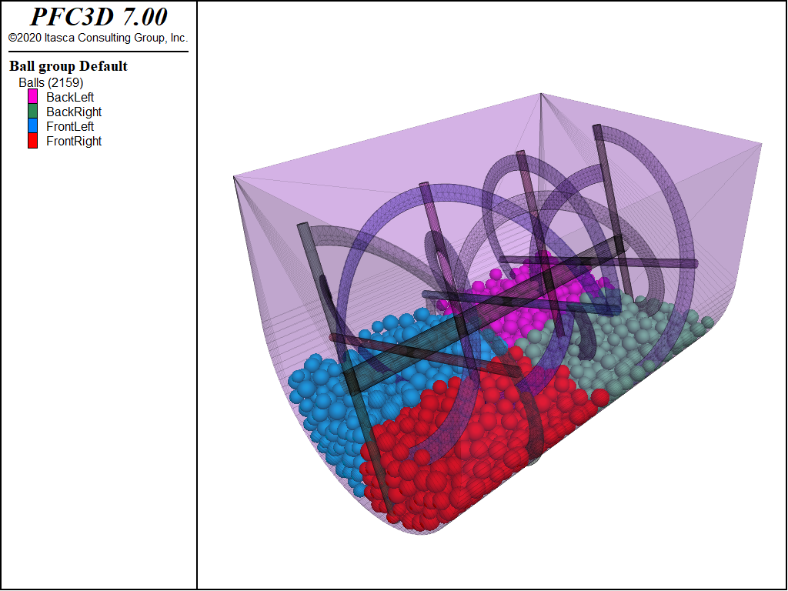
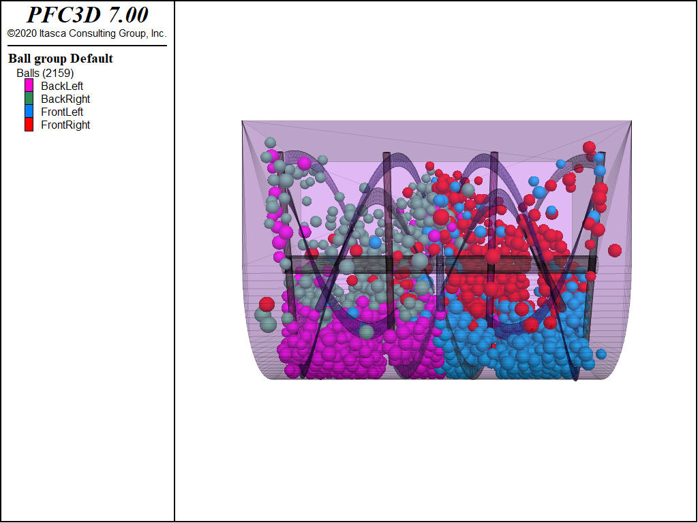
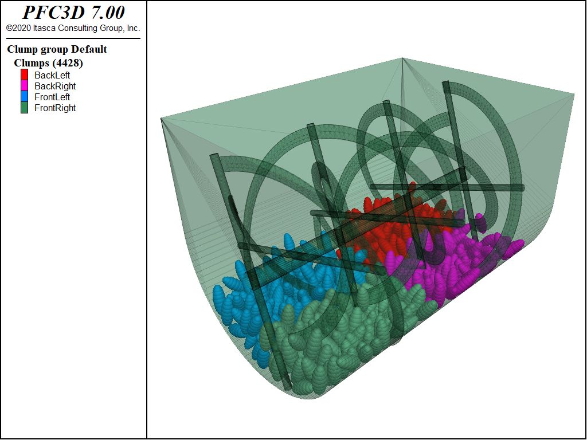
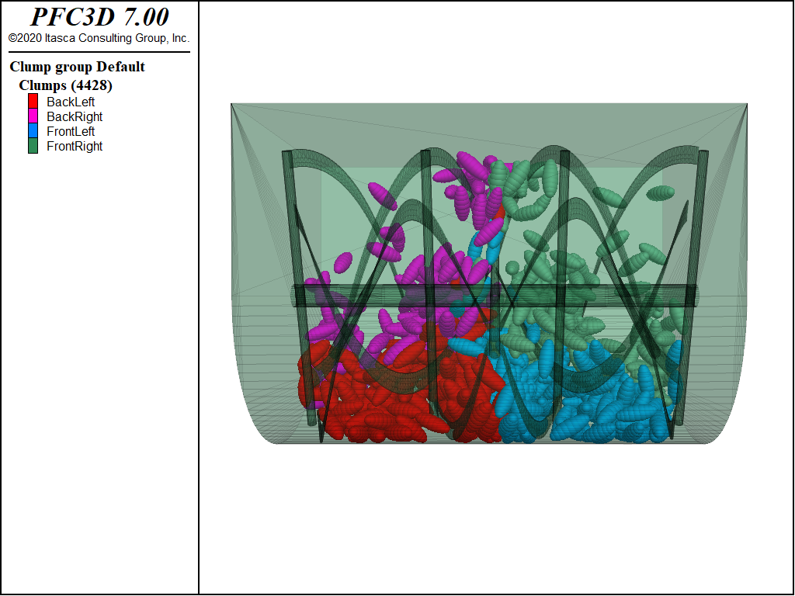
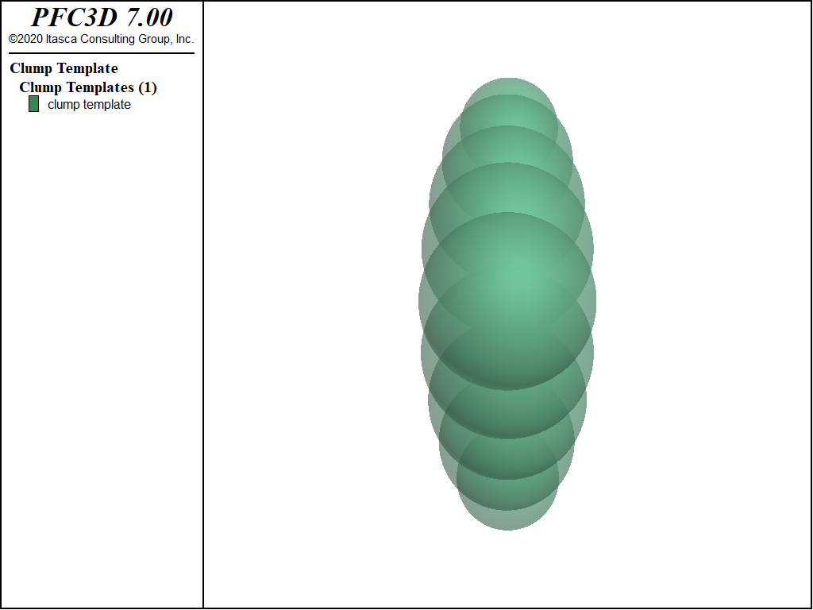
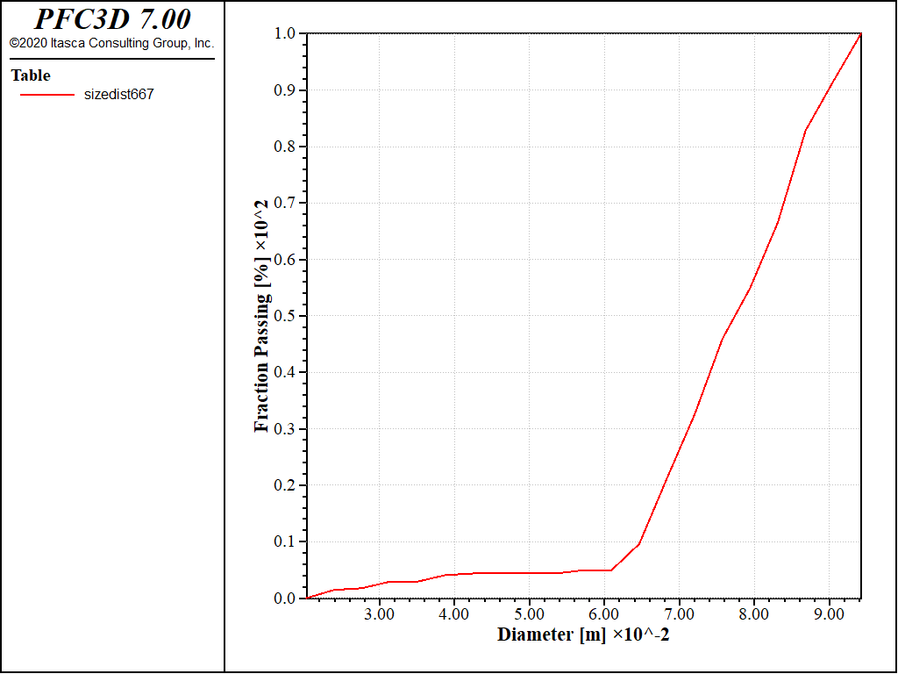
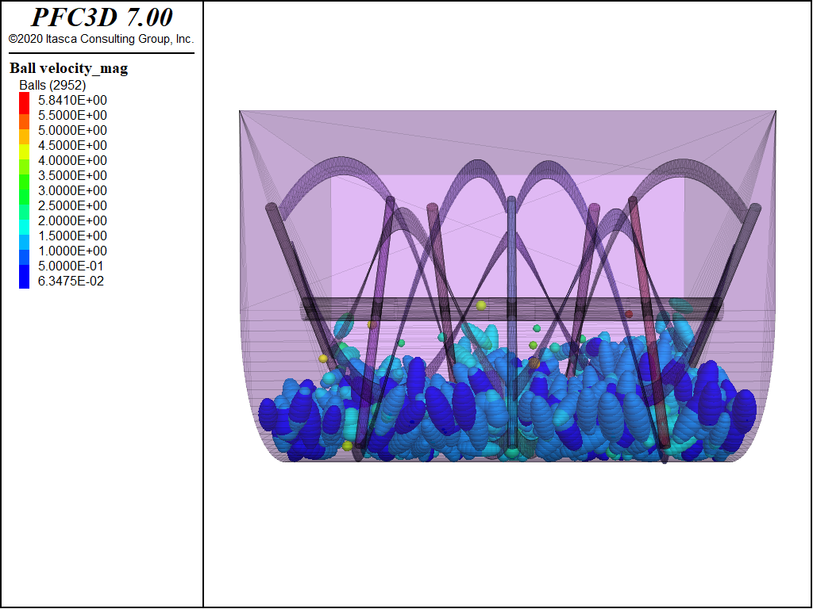

螺带混合机
问题描述
注意
本算例的项目文件可在 PFC 中查看或运行。[1]所用的数据文件（data files）列于本算例末尾。
螺带混合机广泛用于制造业和工业应用中。该混合机具有一根中心轴，其上的混合叶片以不同方式倾斜，看起来就像缠绕在轴上的金属螺带。这种几何结构能够在同一时间将混合物的不同部分推向不同方向，从而确保所有组分都被混合均匀。
离散元法非常适用于这类应用。使用 PFC3D 对螺带混合机进行建模，并采用三种颗粒进行模拟：球颗粒、刚性团簇以及球刚性团簇（后者可以模拟混合过程中的颗粒破碎）。
球颗粒模拟
使用 导入几何对象（geometry import） 命令导入容器、搅拌轴和搅拌叶片的几何形状。该命令允许直接使用 CAD 文件（支持 .dxf 和 .stl 格式），从而将形状复杂的部件纳入模型中，使其与颗粒相互作用。文件“importBlenderGeometry.dat” exap-ribbon-importblendergeometrydoc 展示了该命令的用法。
为每个导入的几何形状生成面片化 walls（墙体），所用命令为 墙体导入从几何（wall import from-geometry）。这些操作得到的混合机结构如图 1（Fig. 1）所示。

图 1：螺带混合机建模。
随后，在由墙体位置定义的边界内生成球颗粒集合体（见 ball distribute 命令）。由于混合机结构的几何形状复杂，颗粒主要在一个盒子范围内生成，而该盒子在某些区域超出了模型边界。之后逐一重新检查每个球颗粒的位置，一旦发现某颗粒占据了模型范围以外的区域，就删除该颗粒。这一过程通过函数 inBlender 和 inBody 实现，它们控制每个颗粒是位于模型边界之外，还是与搅拌叶片相交。完成这些操作需要用到 FISH 函数 判断点是否在墙体内（wall.inside） 以及 范围（range） FISH 命令。前者检查颗粒是否落在某个墙体之内；后者则可根据
函数 inBlender 和 inBody 中指定的准则，自动识别需删除的颗粒。
最后，让颗粒在混合机内沉降，随后即可开始模拟。为墙体定义旋转速度，并按初始位置将球颗粒分为四组，以便评估模拟过程中的混合效率与效果（见图 2（Fig. 2））。


图 2：用于混合球形颗粒的螺带混合机建模。
所有命令均列于文件“BlenderBalls.dat”中。
混合效率可以从定性角度进行评价。叶片旋转若干圈后，可以观察到四个初始分组混合后的结果。叶片旋转几圈后模拟的截图如图 3（Fig. 3）所示。


图 3：若干时步后混合机的侧视图。
刚性团簇模拟
利用刚性团簇逻辑，可以用非球形颗粒进行类似的模拟。特别地，本例中将使用 导入几何对象（geometry import） 命令创建刚性团簇模板。因此，导入“ellipsoid.stl”文件并用其定义 clump template 几何形状，如“BlenderClumps.dat”所示。
混合机的几何形状采用与球形颗粒模拟相同的过程导入（见上一（previous）段）。创建刚性团簇模板，并在模型边界内生成刚性团簇集合体。刚性团簇由刚性相连的子颗粒组成，子颗粒构成颗粒的最终形状。刚性团簇云生成之后，由函数 inBlender 和 inBody 控制是否有子颗粒位于模型边界之外，或者是否与搅拌叶片相交。若出现这种情况，则删除整个刚性团簇（再次使用 范围（range） FISH 命令）。最后，刚性团簇在混合机内沉降，随后即可开始模拟。


图 4：用于混合椭球形颗粒的螺带混合机建模。
叶片旋转几圈后模拟的截图如图 5（Fig. 5）所示。


图 5：若干时步后混合机的侧视图。
球颗粒簇模拟
为了模拟造粒过程，将刚性团簇替换为球刚性团簇。子颗粒之间通过平行黏结相互连接。 此类平行黏结由用户定义的抗拉强度和黏聚力表征，因而可在模拟过程中发生断裂。


图 6：球颗粒簇。
生成刚性团簇并让其沉降，如上一节所示。随后，将刚性团簇替换为球刚性团簇。 每个操作均列于“ClusterMakeCluster.dat”中。函数 replace 遍历模型中所有现有的刚性团簇， 并调用函数 make_cluster，其中包含将每个子颗粒替换为球颗粒所需的操作。随后创建由构成每个球刚性团簇的 球颗粒组成的列表。然后对这些列表排序，以确保列表中相邻的两个球颗粒在球刚性团簇中互为邻居 （见 order_clusters 函数）。这样便可方便地在相邻球颗粒之间安装平行黏结，避免任何意外地将相互重叠但并非邻居的球颗粒黏结在一起，如图 6（Fig. 6）所示。
每当发现两个球颗粒属于同一个团簇且互为邻居时，就调用函数 apply_bonds 来安装平行黏结。同时定义黏结的法向刚度和剪切刚度，以及抗拉强度与剪切强度。团簇之间的接触处设置带摩擦的线性模型。若黏结在模拟过程中断裂，则原先黏结在一起的球颗粒之间的接触模型切换为线性类型。为避免断裂后可能出现的突然排斥力，定义了线性递增的刚度（参见线性模型的 lin_inc 关键字，位于“线性模型属性（Linear Model Properties）”一节）。每当黏结断裂时都会调用回调事件 bond_change（参见“线性平行黏结模型（Linear Parallel Bond Model）”一节）；同时调用函数 restore_friction，并更新接触模型。
本次新模拟的所有操作都列在“BlenderClusters.dat”中。
模拟过程中会定期调用 size_distribution 函数来计算尺寸分布曲线。 这样可以跟踪系统的演化以及团簇破碎为更小颗粒的过程。 size_distribution 函数列于“ClusterSizeDistribution.dat”中。
观察粒径分布的演化是很有意义的。粒径分布曲线的演化如图 图 7（Fig. 7） 所示。请注意，图中绘制的直径是与团簇总体积相同的等效球体的半径。


图 7：团簇模拟。粒径分布曲线的演化。
叶片旋转数圈后模拟的截图如图 图 8（Fig. 8） 所示。颗粒按其速度着色。最强烈的碰撞和颗粒破碎似乎主要发生在混合机的中心区域。


图 8：团簇模拟，混合机侧视图。颗粒速度。
为这种模拟制作动画将会很有意思。使用 设置球体结果输出（ball results） 或 clump results 命令即可轻松生成系列图像。关于其用法示例，请参见“料斗卸料（Hopper Discharge）”教程问题。
数据文件
BlenderBalls.dat
; 文件名：BlenderBalls.dat
model new
model large-strain on
wall resolution full
program call '../blender_geometry/ImportBlenderGeometry'
model domain extent [lbx-0.05*dx] [ubx+0.05*dx] [lby-0.05*dy] ...
[uby+0.05*dy] [lbz-0.05*dz] [ubz+dz] condition destroy
contact cmat default model linear prop dp_nratio 0.8 dp_mode 1
wall import from-geom 'rotor1' clean id 1
wall import from-geom 'rotor2' clean id 2
wall import from-geom 'rotor3' clean id 3
wall import from-geom 'rotor4' clean id 4
wall import from-geom 'rotor5' clean id 5
wall import from-geom 'rotor6' clean id 6
wall import from-geom 'rotor7' clean id 7
wall import from-geom 'rotor8' clean id 8
wall import from-geom 'blade1' clean id 9
wall import from-geom 'blade2' clean id 10
wall import from-geom 'blade3' clean id 11
wall import from-geom 'blade4' clean id 12
wall import from-geom 'blade5' clean id 13
wall import from-geom 'blade6' clean id 14
wall import from-geom 'blade7' clean id 15
wall import from-geom 'blade8' clean id 16
wall group 'facetassembly' facet
wall group 'wallassembly'
wall import from-geom 'bin' clean id 17
wall activeside top range position-z [ubz-0.05*ubz] [ubz+0.05*ubz]
wall activeside top range name 'facetassembly'
model save 'blender'
fish def setup(rpm)
global rp_ = vector(0,0,0) ;旋转点
global spin_ = vector(0,-1,0)*2*math.pi*rpm/60.0 ;旋转轴
global knB_ = 1e4
global ksB_ = 1e4
global knW_ = 1e6
global ksW_ = 1e6
global fric_ = 0.18 ;摩擦
global dens_ = 2000 ;density
end
[setup(60)]
;在箱体中生成一些球
fish def inBlender(pos,b)
inBlender = 0
if type.pointer.id(b) = ball.typeid
wp = wall.find(17);
inBlender = wall.inside(wp,ball.pos(b))
endif
end
fish def inBody(pos,b)
inBody = 0
if type.pointer.id(b) = ball.typeid
local tmp = 0
loop foreach local wp wall.list
if wall.id(wp) # 17
tmp = wall.inside(wp,ball.pos(b))
if tmp = 1
inBody = 1
exit
endif
endif
endloop
endif
end
ball distribute porosity 0.45 ...
resolution 1.5e-2 ...
bin 1 ...
radius 1.0 1.5 ...
volume-fraction 1.0 ...
box [lbx] [ubx] [lby] [uby] [lbz] [lbz+0.3*dz] ...
range fish inBlender ...
fish inBody not
model gravity 0,0,-9.81
ball prop 'kn' [knB_] 'ks' [ksB_] 'fric' [fric_]
wall prop 'kn' [knW_] 'ks' [ksW_] 'fric' [fric_*0.5]
ball attr density [dens_] damp 0.7
model cycle 2000 calm 500
model mechanical timestep scale
model solve ratio-average 1e-3
model mechanical timestep auto
wall attribute rotation-center [rp_] range group 'wallassembly'
wall attribute spin [spin_] range group 'wallassembly'
;设置用于混合的分组
ball group 'FrontLeft' range position-x [lbx-0.05*dx] 0.0 ...
position-y [lby-0.05*dy] 0.5
ball group 'FrontRight' range position-x 0.0 [ubx+0.05*dx] ...
position-y [lby-0.05*dy] 0.5
ball group 'BackLeft' range position-x [lbx-0.05*dx] 0.0 ...
position-y 0.5 [uby+0.05*dy]
ball group 'BackRight' range position-x 0.0 [ubx+0.05*dx] ...
position-y 0.5 [uby+0.05*dy]
model save 'ball_model'
model solve time 1.0
model save 'end_blenderball'
;=========================================================================
; 文件结束：BlenderBalls.dat
importBlenderGeometry.dat
; 文件名：ImportBlenderGeometry.dat
geom import 'rotor1.stl'
geom import 'rotor2.stl'
geom import 'rotor3.stl'
geom import 'rotor4.stl'
geom import 'rotor5.stl'
geom import 'rotor6.stl'
geom import 'rotor7.stl'
geom import 'rotor8.stl'
geom import 'blade1.stl'
geom import 'blade2.stl'
geom import 'blade3.stl'
geom import 'blade4.stl'
geom import 'blade5.stl'
geom import 'blade6.stl'
geom import 'blade7.stl'
geom import 'blade8.stl'
geom import 'bin.stl'
;计算所需盒子的尺寸
fish def cdim
lbx = 1e5
lby = 1e5
lbz = 1e5
ubx = -1e5
uby = -1e5
ubz = -1e5
local gs = geom.set.find(17)
loop foreach local gn geom.node.list(gs)
local pos = geom.node.pos(gn)
if lbx > comp.x(pos)
lbx = comp.x(pos)
endif
if lby > comp.y(pos)
lby = comp.y(pos)
endif
if lbz > comp.z(pos)
lbz = comp.z(pos)
endif
if ubx < comp.x(pos)
ubx = comp.x(pos)
endif
if uby < comp.y(pos)
uby = comp.y(pos)
endif
if ubz < comp.z(pos)
ubz = comp.z(pos)
endif
endloop
dx = ubx - lbx
dy = uby - lby
dz = ubz - lbz
end
[cdim]
;=========================================================================
; 文件结束：ImportBlenderGeometry.dat
BlenderClumps.dat
; 文件名：BlenderClumps.dat
model new
model large-strain on
wall resolution full
program call '../blender_geometry/ImportBlenderGeometry'
model domain extent [lbx-0.05*dx] [ubx+0.05*dx] [lby-0.05*dy] ...
[uby+0.05*dy] [lbz-0.05*dz] [ubz+dz] condition destroy
wall import from-geom 'rotor1' clean id 1
wall import from-geom 'rotor2' clean id 2
wall import from-geom 'rotor3' clean id 3
wall import from-geom 'rotor4' clean id 4
wall import from-geom 'rotor5' clean id 5
wall import from-geom 'rotor6' clean id 6
wall import from-geom 'rotor7' clean id 7
wall import from-geom 'rotor8' clean id 8
wall import from-geom 'blade1' clean id 9
wall import from-geom 'blade2' clean id 10
wall import from-geom 'blade3' clean id 11
wall import from-geom 'blade4' clean id 12
wall import from-geom 'blade5' clean id 13
wall import from-geom 'blade6' clean id 14
wall import from-geom 'blade7' clean id 15
wall import from-geom 'blade8' clean id 16
wall group 'facetassembly' facet
wall group 'wallassembly'
wall import from-geom 'bin' clean id 17
wall activeside top range position-z [ubz-0.05*ubz] [ubz+0.05*ubz]
wall activeside top range name 'facetassembly'
model save 'blender'
fish def setup(rpm)
rp_ = vector(0,0,0)
spin_ = vector(0,-1,0)*2*math.pi*rpm/60.0
knB_ = 1e4
ksB_ = 1e4
knW_ = 1e8
ksW_ = 1e8
fric_ = 0.18
dens_ = 2000
end
[setup(60)]
geometry import 'ellipsoid.stl'
clump template create name 'pill' geometry 'ellipsoid' ...
calculate-surface bubblepack ratio 0.5 distance 150
contact cmat default type Pebble-Pebble ...
model Linear property kn 10e4 inh off ...
ks 10e4 inh off fric 0.18
contact cmat default type Pebble-Facet ...
model Linear property kn 10e5 inh off ...
ks 10e5 inh off fric 0.09
clump distribute porosity 0.45 ...
resolution 5e-2 ...
number-bins 1 ...
diameter ...
bin 1 size 1.0 1.20 ...
volume-fraction 1 ...
template 'pill' ...
az 90 90 ...
el 0 0 ...
tilt 0 0 ...
box [lbx] [ubx] [lby] [uby] [lbz] [lbz+0.3*dz]
fish def inBlender(pos,c)
inBlender = 1
if type.pointer.id(c) = clump.typeid
loop foreach local pb clump.pebblelist(c)
local tmp = 0
wp = wall.find(17);
tmp = wall.inside(wp,clump.pebble.pos(pb))
if tmp = 0
inBlender = 0
exit
endif
endloop
endif
end
clump delete range fish inBlender not
fish def inBody(pos,c)
inBody = 0
if type.pointer.id(c) = clump.typeid
loop foreach local pb clump.pebblelist(c)
local tmp = 0
loop foreach local wp wall.list
if wall.id(wp) # 17
tmp = wall.inside(wp,clump.pebble.pos(pb))
if tmp = 1
inBody = 1
exit
endif
endif
endloop
endloop
endif
end
clump delete range fish inBody
model gravity 0,0,-9.81
clump attr density [dens_] damp 0.7
model cycle 2000 calm 500
model mechanical timestep scale
model solve ratio-average 1e-1
model mechanical timestep auto
clump attr damp 0.0
wall attr rotation-center [rp_] range group 'wallassembly'
wall attr spin [spin_] range group 'wallassembly'
;设置用于混合的分组
clump group 'FrontLeft' range ...
position-x [lbx-0.05*dx] 0.0 position-y [lby-0.05*dy] 0.5
clump group 'FrontRight' range ...
position-x 0.0 [ubx+0.05*dx] position-y [lby-0.05*dy] 0.5
clump group 'BackLeft' range ...
position-x [lbx-0.05*dx] 0.0 position-y 0.5 [uby+0.05*dy]
clump group 'BackRight' range ...
position-x 0.0 [ubx+0.05*dx] position-y 0.5 [uby+0.05*dy]
model save 'clump_model'
model solve time 0.5
model save 'end_blenderclump'
;=========================================================================
; 文件结束：BlenderClumps.dat
BlenderClusters.dat
; 文件名：BlenderClusters.dat
model new
model large-strain on
wall resolution full
program call 'ClusterMakeCluster'
program call 'ClusterSizeDistribution'
program call '../blender_geometry/ImportBlenderGeometry'
geometry import 'ellipsoid.stl'
model domain extent [lbx-0.05*dx] [ubx+0.05*dx] [lby-0.05*dy] ...
[uby+0.05*dy] [lbz-0.05*dz] [ubz+dz] condition destroy
wall import from-geom 'rotor1' clean id 1
wall import from-geom 'rotor2' clean id 2
wall import from-geom 'rotor3' clean id 3
wall import from-geom 'rotor4' clean id 4
wall import from-geom 'rotor5' clean id 5
wall import from-geom 'rotor6' clean id 6
wall import from-geom 'rotor7' clean id 7
wall import from-geom 'rotor8' clean id 8
wall import from-geom 'blade1' clean id 9
wall import from-geom 'blade2' clean id 10
wall import from-geom 'blade3' clean id 11
wall import from-geom 'blade4' clean id 12
wall import from-geom 'blade5' clean id 13
wall import from-geom 'blade6' clean id 14
wall import from-geom 'blade7' clean id 15
wall import from-geom 'blade8' clean id 16
wall group 'facetassembly' facet
wall group 'wallassembly'
wall import from-geom 'bin' clean id 17
wall activeside top range position-z [ubz-0.05*ubz] [ubz+0.05*ubz]
wall activeside top range name 'facetassembly'
fish define setup(rpm)
rp_ = vector(0,0,0)
spin_ = vector(0,-1,0)*2*math.pi*rpm/60.0
knB_ = 1e4
ksB_ = 1e4
knW_ = 1e8
ksW_ = 1e8
fric_ = 0.18
dens_ = 2000
end
[setup(60)]
clump template create name 'pill' ...
geometry 'ellipsoid' ...
calculate-surface bubblepack ...
ratio 0.5 ...
distance 150
contact cmat default type pebble-pebble ...
model linear property kn 10e4 inh off ...
ks 10e4 inh off fric 0.18
contact cmat default type pebble-facet ...
model linear property kn 10e5 inh off ...
ks 10e5 inh off fric 0.09
clump distribute porosity 0.45 ...
number-bins 1 ...
diameter ...
resolution 1.0 ...
bin 1 size 0.05 0.075 ...
volume-fraction 1 ...
template 'pill' ...
az 90 90 ...
el 0 0 ...
tilt 0 0 ...
box [lbx] [ubx] [lby] [uby] [lbz] [lbz+0.3*dz]
fish def inBlender(pos,c)
inBlender = 1
if type.pointer.id(c) = clump.typeid
loop foreach local pb clump.pebblelist(c)
local tmp = 0
wp = wall.find(17)
tmp = wall.inside(wp,clump.pebble.pos(pb))
if tmp = 0
inBlender = 0
exit
endif
endloop
endif
end
clump delete range fish inBlender not
fish def inBody(pos,c)
inBody = 0
if type.pointer.id(c) = clump.typeid
loop foreach local pb clump.pebblelist(c)
local tmp = 0
loop foreach local wp wall.list
if wall.id(wp) # 17
tmp = wall.inside(wp,clump.pebble.pos(pb))
if tmp = 1
inBody = 1
exit
endif
endif
endloop
endloop
endif
end
clump delete range fish inBody
model gravity 0,0,-9.81
clump attr density [dens_] damp 0.7
model cycle 2000 calm 500
[ini_clusters]
[replace]
[order_clusters]
[list_clusters]
fish define inclump(extra, ct)
inclump = 0
if type.pointer.id(ct) = contact.typeid("ball-ball")
if ball.extra(contact.end1(ct),1) == ball.extra(contact.end2(ct),1) then
inclump = 1
exit
endif
endif
end
contact cmat default type ball-ball model linear ...
property kn 10e4 inh off ks 10e4 inh off fric 0.18 inh off
contact cmat default type ball-facet model Linear ...
property kn 10e5 inh off ks 10e5 inh off fric 0.09 inh off
contact cmat add 1 model linearPBond ...
property fric 0.0 kn 0.0 inh off ks 0.0 inh off dp_nratio 0.2 ...
range fish inclump
model clean
contact cmat apply
[applybonds]
fish def restorefriction(arr)
ct=arr(1)
;local oa = out(string.build("extra1 %1 - ...
; extra2 %2",ball.extra(c_end1(ct),1), ...
; ball.extra(c_end2(ct),1)))
if ball.extra(contact.end1(ct),1) == ball.extra(contact.end2(ct),1)
io.out(string.build("Contact broken! %1",contact.prop(ct,'pb_state')))
contact.model(ct) = 'Linear'
contact.prop(ct,'kn') = 10e4
contact.prop(ct,'ks') = 10e4
contact.prop(ct,'lin_mode') = 1
idc = idc + 1
blist = array.create(1)
blist(1) = contact.end1(ct)
size = array.size(blist,1)
ind = 0
stop = 0
loop while stop = 0
newbonds = 0
newvisited = 0
loop local i (1,size+ind)
;local oppz = out(string.build("blist(i) %1",blist(i)))
if ball.extra(blist(i),2) = 0 ;未访问
newvisited = newvisited + 1
loop foreach local con ball.contactmap(blist(i))
if contact.model(con) # "Linear"
if contact.prop(con,'pb_state')=3
if ball.extra(contact.end1(con),2) = 0 ;未访问
if ball.extra(contact.end2(con),2) = 0 ; " "
newbonds = newbonds + 1
;local ff = out(string.build...
; ("ball ids = %1 %2",ball.id...
; (c_end1(con)),ball.id(c_end2(con))))
endif
endif
endif
endif
endloop
ball.extra(blist(i),2) = 1 ;已访问
ball.extra(blist(i),1) = idc
endif
endloop
;local ops = out(string.build("newbonds %1",newbonds))
if newbonds#0
oldblist = blist
blist = array.create(size+ind+newbonds)
loop local k (1,size+ind)
blist(k) = oldblist(k)
endloop
loop local ii (size+ind+1-newvisited,size+ind)
clist = ball.contactmap(blist(ii))
loop foreach local jj clist
if contact.model(jj) # "linear"
if contact.prop(jj,'pb_state')=3
if ball.extra(contact.end1(jj),2) = 0 ;未访问
ind = ind + 1
blist(size+ind) = contact.end1(jj)
else if ball.extra(contact.end2(jj),2) = 0 ;未访问
ind = ind + 1
blist(size+ind) = contact.end2(jj)
endif
endif
endif
endloop
endloop
else
stop = 1
endif
endloop
endif
loop foreach local bp ball.list
ball.extra(bp,2) = 0 ;未访问
endloop
end
ball attr density 2000 damp 0.7
fish callback add restorefriction event bond_break
model mechanical timestep auto
model cycle 2000 calm 500
ball attr damp 0.0
wall attribute rotation-center [rp_] range group 'wallassembly'
wall attribute spin [spin_] range group 'wallassembly'
fish def initializeTime
mp_age_c = mech.time.total
global tinc = 0.01
global tnext = tinc
end
[initializeTime]
fish def buildPSD
whilestepping
global temps = mech.time.total-mp_age_c
if temps > tnext then
sizedistribution(20)
tnext = tnext + tinc
endif
end
[sizedistribution(20)]
model save 'cluster_model'
model solve time 0.1
model save 'end_blendercluster'
;=========================================================================
; 文件结束：BlenderClusters.dat
ClusterMakeCluster.dat
; 文件名：ClusterMakeCluster.dat
fish define ini_clusters
global cluster_head = null
global bnumber=0
clt = clump.template.find('pill')
loop foreach p clump.template.pebblelist(clt)
bnumber = bnumber + 1
endloop
io.out(string.build("number of pebbles = %1", bnumber))
end
fish define make_cluster(clump)
; 用一组球替换一个刚性团簇
newclus = memory.create(bnumber+3)
memory(newclus) = cluster_head
cluster_head = newclus
global idc = clump.id(clump)
local num=1
memory(newclus+num) = idc
num=num+1
local bfirst
loop foreach local p clump.pebblelist(clump)
global prad = clump.pebble.radius(p)
global ppos = clump.pebble.pos(p)
global idp = clump.pebble.id(p)
command
ball create id [idp] rad [prad] pos [ppos]
endcommand
num = num + 1
local bp = ball.find(idp)
if num>3 then
if comp.x(ball.pos(bp)) < comp.x(ball.pos(bfirst)) then
bfirst = bp
endif
else
bfirst = bp
endif
ball.extra(bp,1) = idc
memory(newclus+num) = bp
endloop
memory(newclus+2) = bfirst
clump.delete(clump)
end
fish define replace
loop foreach clump clump.list
make_cluster(clump)
endloop
end
fish define order_clusters
cluster = cluster_head
loop while cluster # null
newcluster = array.create(9)
newcluster(1) = memory(cluster+2)
loop j(2,9)
referenceball = newcluster(j-1)
dist=1000
loop i(1,bnumber)
thisball = memory(cluster+2+i)
newdist = comp.x(ball.pos(thisball))-comp.x(ball.pos(referenceball))
io.out(string.build("newdist = %1",newdist))
if newdist > 0
if newdist < dist
nearestball = thisball
dist = newdist
endif
endif
endloop
newcluster(j) = nearestball
endloop
loop i(1,bnumber)
memory(cluster+i+2) = newcluster(i)
endloop
cluster = memory(cluster)
endloop
end
fish define list_clusters
cluster = cluster_head
loop while cluster # null
local idc = memory(cluster+1)
local bleft = memory(cluster+2)
io.out(string.build("--cluster with ID %1 : ",idc))
io.out(string.build("--left most ball id : %1",ball.id(bleft)))
loop i(1,bnumber)
bp = memory(cluster+i+2)
io.out(string.build(" - ball id %1",ball.id(bp)))
endloop
cluster = memory(cluster)
endloop
end
fish def applybonds
cluster = cluster_head
loop while cluster # null
loop i(1,bnumber-1)
bp = memory(cluster+i+2)
bp_next=memory(cluster+i+3)
local clist = ball.contactmap(bp)
section
loop foreach local con clist
ok=0
if contact.end1(con) = bp_next
ok=1
else if contact.end2(con) = bp_next
ok=1
endif
if ok=1
local arg = array.create(1,2)
arg(1,1) = 'gap'
arg(1,2) = 0.0
contact.method(con,"bond",arg)
contact.prop(con,"pb_kn")=1e12
contact.prop(con,"pb_ks")=1e12
contact.prop(con,"pb_ten")=1e8
contact.prop(con,"pb_coh")=1e6
contact.prop(con,"pb_rmul")=0.8
exit section
endif
endloop
endsection
endloop
cluster = memory(cluster)
endloop
end
;=========================================================================
; 文件结束：ClusterMakeCluster.dat
ClusterSizeDistribution.dat
; 文件名：ClusterSizeDistribution.dat
fish def clumpvolumes
;local oo45 = out(string.build("nclumps = %1",nclumps))
global volumes = array.create(idc)
loop local i (1,array.size(volumes,1))
volumes(i)=0.0
endloop
loop foreach bp ball.list
volumes(ball.extra(bp,1)) = ...
volumes(ball.extra(bp,1)) + 1.3333*math.pi*ball.radius(bp)^3
endloop
end
fish def sizedistribution(intervals)
command
[clumpvolumes]
endcommand
io.out(string.build("size volumes = %1", array.size(volumes,1)))
nentries = array.size(volumes,1)
radius = array.create(nentries)
minD = 1000
maxD = -1
local nonzeroentries = 0
loop local i (1,array.size(volumes,1))
radius(i) = ((3*volumes(i))/(4*math.pi))^(0.33333)
if radius(i)#0
nonzeroentries = nonzeroentries + 1
minD = math.min(radius(i)*2,minD)
maxD = math.max(radius(i)*2,maxD)
endif
;local oox = out(string.build("current value of radius = %1", radius[i]))
endloop
io.out(string.build("minD = %1 , maxD = %2", minD, maxD))
increment = (maxD-minD)/intervals
passing = array.create(intervals+1)
aveD = array.create(intervals+1)
t = string.build("sizedist%1",nentries)
dist = table.get(t)
loop local j (1,array.size(aveD,1))
aveD(j) = minD + increment*(j-1)
passing(j) = 0.0
endloop
table(t,aveD(1))=passing(1)
loop local p (2,array.size(passing,1))
pass = 0
loop local r (1,array.size(radius,1))
d = radius(r)*2
if d#0
if d<=aveD(p)
;local oo52 = ...
;out(string.build("d = %1 , aveD = %2, pass = %3", d, aveD[p+1],pass))
pass = pass+1
endif
endif
endloop
;local oo23 = ...
;out(string.build("nonzeroentries = %1 , pass = %2", nonzeroentries, pass))
passing(p) = 100*(float(pass)/nonzeroentries)
table(t,aveD(p))=passing(p)
endloop
loop local tt (1,array.size(aveD,1))
io.out(string.build("passing[%1] = %2", tt, passing(tt)))
endloop
end
;==============================================================================
; 文件结束：SizeDistribution.dat
尾注
| [1] | 要在 PFC 中查看本项目，请使用程序菜单。
⮡ PFC |
| 这些内容对您有帮助吗？… | FLAC3D © 2019, Itasca | 原文更新于 2020 年 10 月 8 日 |